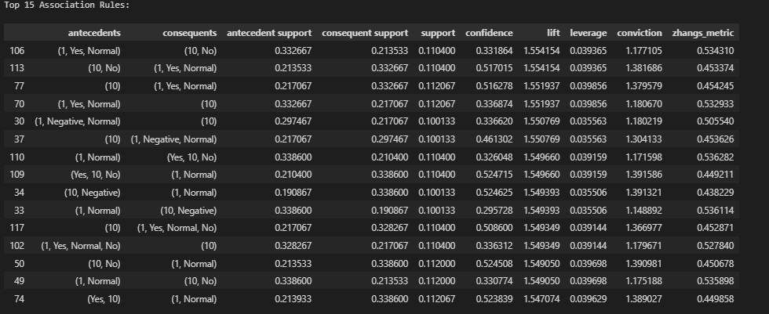

What is Association Rule Mining?
Association Rule Mining (ARM) is used to uncover hidden relationships in datasets. It is widely used in market basket analysis, healthcare, and more.
- Support - How frequently an itemset appears in the dataset.
- Confidence - How often items in a rule appear together.
- Lift - How much more likely items occur together than expected.

Association Rule Mining (ARM) - Brief Overview
ARM helps discover hidden relationships between features in a dataset using Support, Confidence, and Lift metrics.
ARM Rules and Relationships
The visualization below highlights the top association rules extracted from the dataset:
How ARM is Used in This Project
ARM is applied to identify key relationships between patient symptoms, lifestyle factors, and diabetes risk, improving decision-making in healthcare analytics.

GitHub Repository
View Clustering Code on GitHub ↗Dataset Used
I applied ARM on the cleaned diabetes dataset. Below is a preview:
 Download Cleaned Dataset
Download Cleaned Dataset
Data Preprocessing Steps
1. Load the Dataset
The cleaned diabetes dataset is loaded before applying ARM.
2. Converting Categorical Data
All categorical variables were transformed into a suitable format for rule mining.
3. Encoding Categorical Values
Using one-hot encoding, categorical features were represented as binary values.
ARM Results & Visualizations
The top 15 association rules based on support, confidence, and lift.
Top Association Rules by Support: This table displays the most frequent itemsets in the dataset, showing strong co-occurrence relationships based on support values.
Top Association Rules by Confidence: The confidence metric indicates the likelihood of occurrence of the consequent given the antecedent. Higher confidence values suggest stronger associations between features.
Top Association Rules by Lift: Lift measures how much more likely the antecedent and consequent appear together compared to random chance. Rules with high lift values indicate strong positive correlations.
Conclusion: Association Rule Mining (ARM) in Healthcare
- Strong Symptom-Diagnosis Links: Certain symptom combinations strongly correlate with specific diagnoses, aiding early disease detection.
- Lifestyle & Genetics Influence: Environmental and genetic factors impact health outcomes, supporting personalized treatments.
- Key Health Metrics: Blood Glucose Levels, Pulmonary Function, and Insulin Levels frequently appear in top rules, highlighting their importance.
Rule Importance
- Lift: Identifies strong, non-random associations.
- Confidence: Shows the likelihood of a condition given another factor.
- Support: Highlights commonly occurring patterns.
Healthcare Impact
ARM helps in risk prediction, preventive care, and personalized patient management.
Final Thought: ARM provides data-driven insights to improve diagnosis, treatment, and preventive strategies in healthcare.